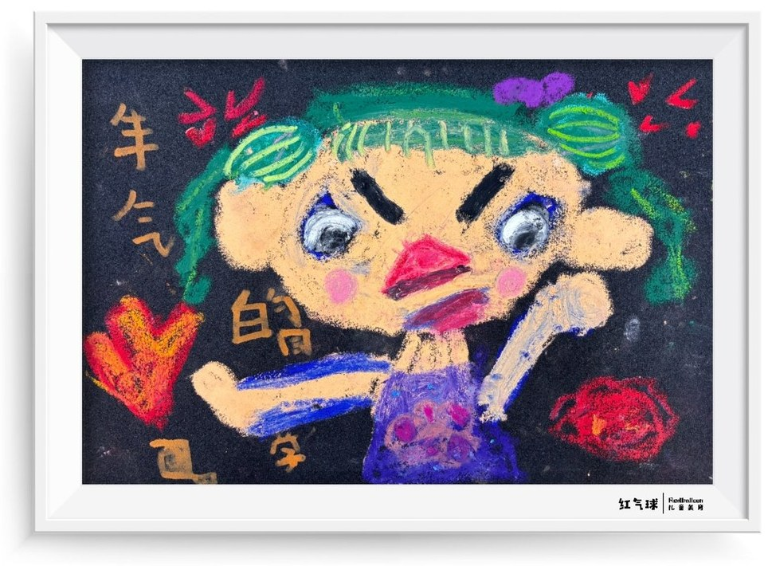
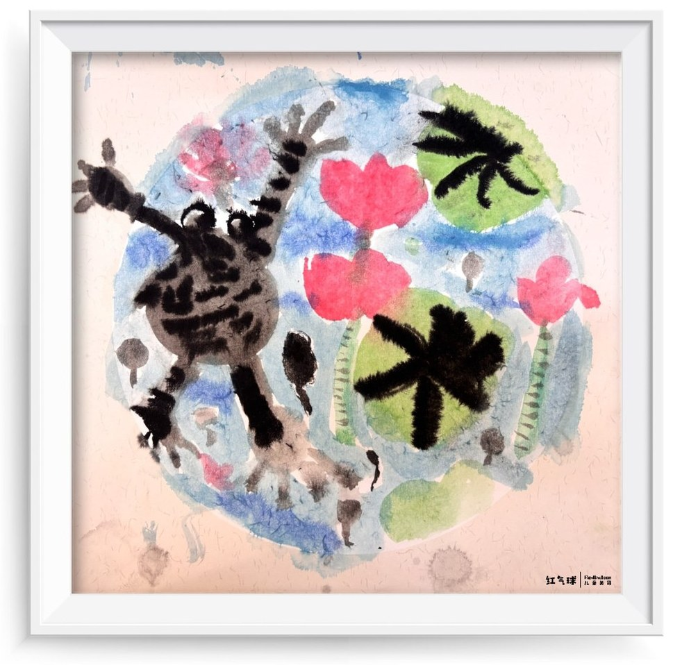
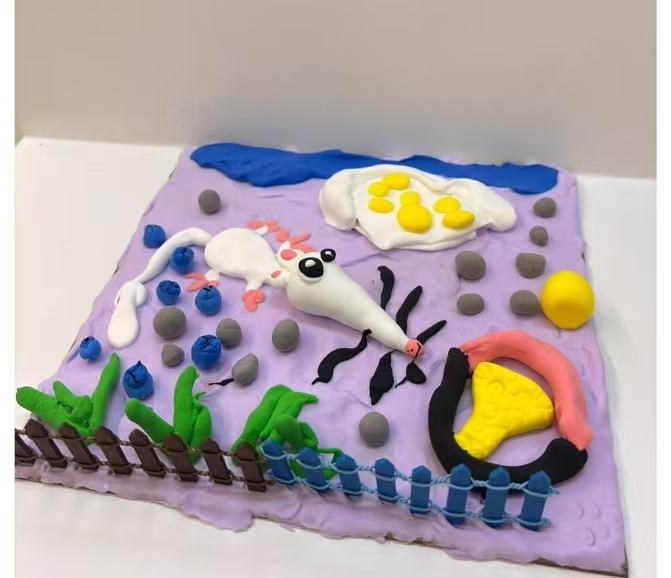
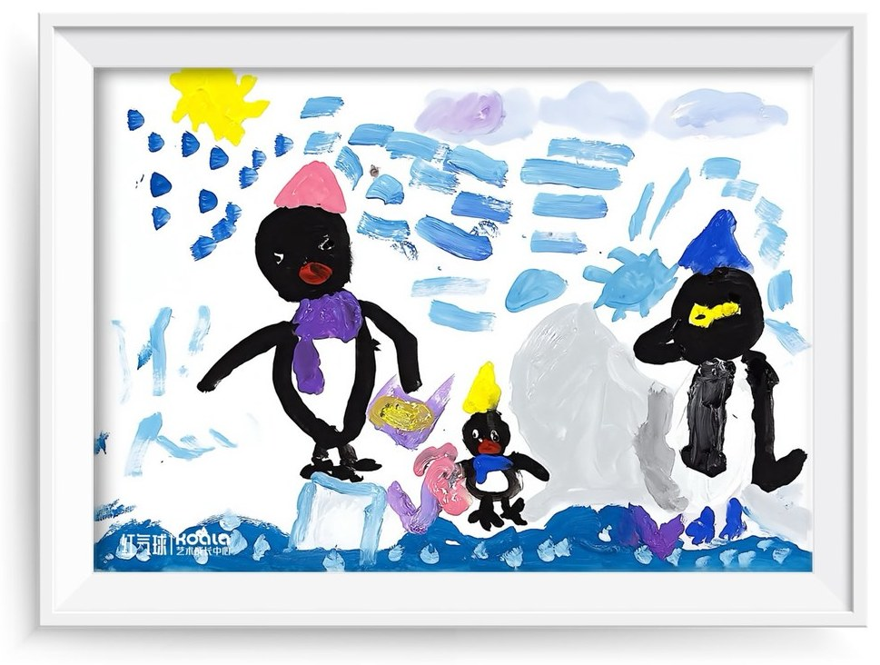

2026.10.28 · 油画棒
画出自己的心情
《生气的我》
情绪也可以留在画纸上。
HANHAN'S LITTLE ART GARDEN
一笔一画，慢慢长大
从 2026 年 8 月 26 日第一次画画开始
留住颜色、想象力，还有每一次新的尝试。

2026.10.28 · 油画棒
《生气的我》
情绪也可以留在画纸上。

2026.09.23 · 水墨
《荷塘》
尝试用不同材料表达眼中的世界。

2026.09.09 · 手工创作
《黏土小花园》
画纸之外，也有好玩的创作方式。

2026.08.26 · 水粉画
《企鹅的冰川之旅》
晗晗第一次拿起画笔的这一天。
点开画廊，看看每一幅画的小故事。
已收录的作品都保留在原来的画廊里。